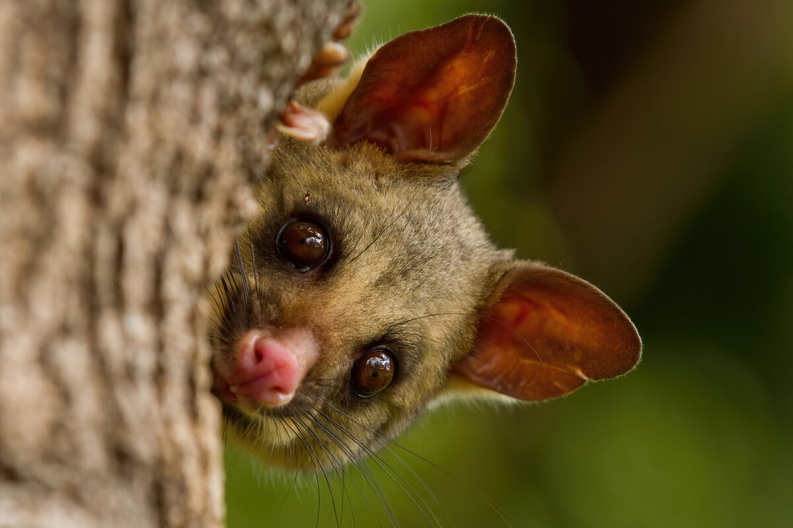
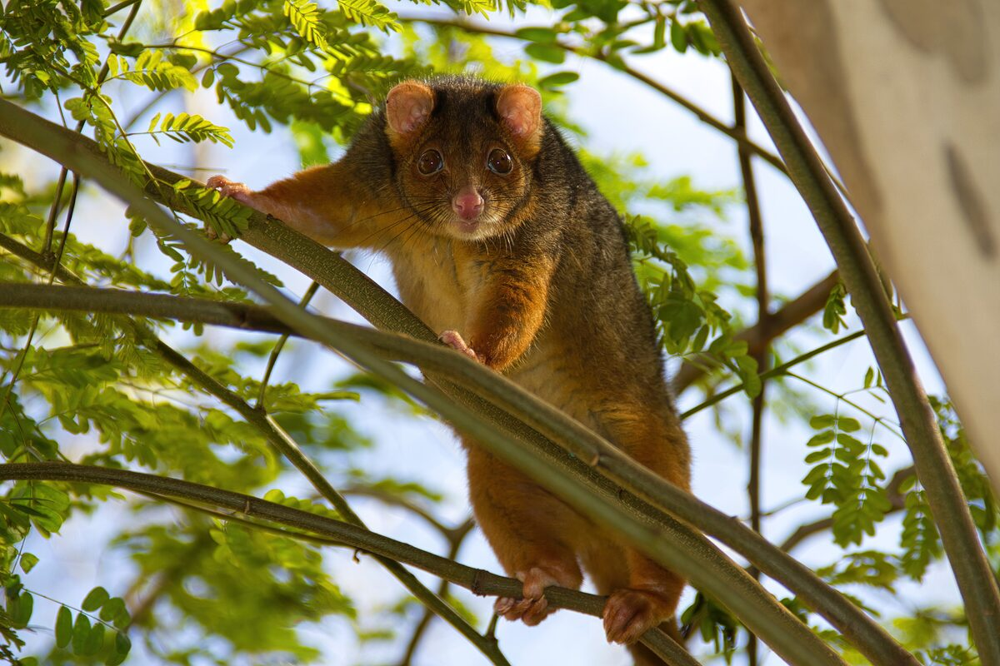

03 / Explore together
Who shares our neighbourhood?
Choose a possum. Discover one way to live alongside it.

Common brushtail possum
A bushy tail. A night-time neighbour.
Meet the brushtail →
Common ringtail possum
A curled tail. At home in the branches.
Meet the ringtail →